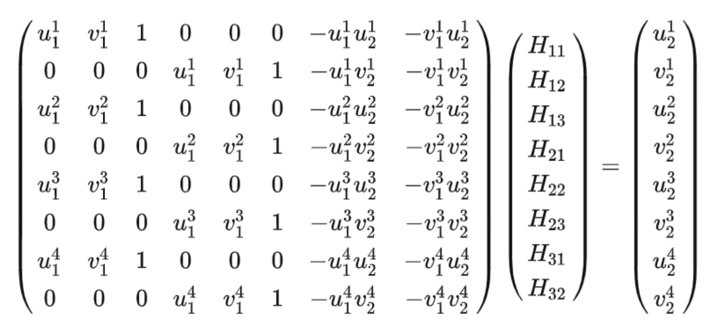

Project 4:
Stitching Photo Mosaics
This project is about stitching together many different photos of the same scene into a single bigger mosaic. In the first part we will warp and composite some photographs that we have taken, create some panoramas but using hand picked correspondances. In the second part we will introduce a way to automatically find correspondances between images and stitch them together.
Part A: Image Warping and Mosaicing
Part 1 and 2: Shoot and digitize pictures; Recover homographies
Here are some images I have used for this project. I have marked the corner points of the objects in the image I want to retify. For the first image, we are going to rectify a symbol that is on the roof of the building. For the second image, we are going to rectify a table that we are viewing form an angle.
This is the first image we are going to rectfy. Goal is to rectify the symbol on the roof
This is our second image we are going to rectify, we want to try to rectify the table
Our first task here is to find the homographies that map the points in the first image to the points of our target. For the symbol on the roof, we want to warp the points that I have marked in the image 1 shown above, into a rectangle with the points (0,0), (0,200), (100,0), (100,200).
To find the points we have to solve the first solve for this equation. Where the Homography matrix are
the Values H11 to H33, where H33 just has the value 1.
The homography matrix is a 3x3 matrix that maps the points from one image to another. We can solve this equation by using the least squares method. Here u1 and v1 are the x and y coordinates of the points in the source image and u2 and v2 are the points in the destination image. We have only listed the equation for 4 points here, but we can extend this to more points.
Part 3 and 4: Warp the Images; Image Rectification
Once we have the H, we can just apply it to our first image and get the rectified result:
Oh wait, we still have to do the warping. For the warping function, I used the same method I also used during project 3 I am using an inverse warp and am using nearest neighbor interpolation.
Now we can warp it to see our result:
This is the first image we are going to rectfy. Goal is to rectify the symbol on the roof
This is the rectification of the first image my warping using the homography matrix
This is the first image we are going to rectfy. We want to see the table from above
This is the rectification of the second image my warping using the homography matrix
Part 5: Blend the images into a mosaic
To create the mosaic, we have to blend the two images together. For that I first calculated the destination of the warped corners of our source image and then I created a destination image, that is big enough to fit both images. I basically have to increase the destination image size by applying new_width = int(max_width - min_width) and new_height = int(max_height - min_height). The homography matrix also needs to be appended with a translation of this amount.
Our mask, where we can see the part where the two images overlap
This mask actually did not work so well, which is why I returned to using laplacian blending from our project 3 to blend the borders.
I then used an inverse warp from the last part of the task to warp both images onto each other.
In the parts where the overlap I used a simple mask to alpha blend the images together.
In the following I am showing different 3 mosaics, obtained by using the described blending technique:
First Example: Great Hall
This is the first image we are going to rectfy. We want to see the table from above
This is the rectification of the second image my warping using the homography matrix
This is the rectification of the second image my warping using the homography matrix
Second Example: Homework
This is the first image we are going to rectfy. We want to see the table from above
This is the rectification of the second image my warping using the homography matrix
This is the rectification of the second image my warping using the homography matrix
Third Example: iHouse
This is the first image we are going to rectfy. We want to see the table from above
This is the rectification of the second image my warping using the homography matrix
This is the rectification of the second image my warping using the homography matrix